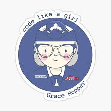
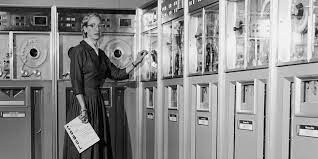

Grace Hopper
Grace Murray Hopper (Nova Iorque, 9 de dezembro de 1906 — Condado de Arlington, 1 de janeiro de 1992) foi almirante e, analista de sistemas da Marinha dos Estados Unidos nas décadas de 1940 e 1950, criadora da linguagem de programação de alto nível Flow-Matic (em desuso) — base para a criação do COBOL — e uma das primeiras programadoras do computador Harvard Mark I[1] em 1944
Antes da Marinha, Hopper conquistou o Ph.D. em matemática na Universidade de Yale e foi professora de matemática na Faculdade Vassar. Tentou entrar na Marinha durante a Segunda Guerra Mundial, mas foi rejeitada por ter 34 anos. Por consequência, entrou na Navy Reserves (em tradução livre, a Reserva da Marinha). Em 1944, começou sua carreira em computação, quando trabalhou no Mark I de Harvard no time conduzido por Howard H. Aiken. Neste período, foi co-autora de três artigos científicos baseados nesse projeto.

Em 1949, ela passou a participar do Eckert-Mauchly Computer Corporation e fez parte do time que desenvolveu o computador UNIVAC I. Enquanto estava no Eckert-Mauchly, começou o desenvolvimento do seu compilador. O programa dela convertia termos em Inglês para código de máquina e em 1952, tinha terminado o desenvolvimento do seu programa ligador (originalmente chamado de compilador), o qual foi desenvolvido para o Sistema A-0.
Infância e Educação
Grace Murray nasceu na cidade de Nova Iorque, sendo a mais velha de três irmãos. Seus pais, Walter Fletcher Murray e Mary Campbell Van Horne, eram de descendência Escocesa e Holandesa e cursaram o West End Collegiate Church. Seu bisavô, Alexander Wilson Russell, um almirante da Marinha Americana, lutou na Batalha da Baía de Mobile, durante a Guerra de Secessão.[3] Foi sempre foi uma criança curiosa, um traço que a marcou pela vida. Aos sete anos decidiu descobrir como funcionava um despertador. Desmontou sete despertadores antes que sua mãe percebesse o que estava fazendo - aí Grace foi autorizada a mexer em apenas um despertador.[4]
Grace Hopper foi à Hartridge School em Plainfield, Nova Jersei. Foi inicialmente rejeitada no processo de admissão no Vassar College aos 16 anos (suas notas em latim eram baixas), sendo admitida no ano seguinte. Graduou-se em 1928 como bacharel em Matemática e Física e, em 1930, concluiu seu mestrado na Yale University. Em 1934, também na Yale University, conquistou seu Ph.D. em Matemática sob a orientação de Øystein Ore.[5][6] A dissertação dela "Novos Critérios de Irredutibilidade" foi publicada no mesmo ano.[7] Começou a ensinar Matemática no Vassar em 1931 e foi promovida a professora associada em 1941. Foi casada com um professor da Universidade de Nova Iorque, Vincent Foster Hopper (1906–1976[8]) de 1930 a 1945, quando se divorciou dele.[5] Nunca se casou novamente, mas manteve o sobrenome
Carreira
Segunda Guerra MundialAssinatura de Grace Hopper na inscrição de oficial de serviço para o Bureau of Ships Computation Project at Harvard (em tradução livre, Escritório do Projeto de Computação de Navios em Harvard), no qual foi construído e operado o Mark I Hopper tentou se alistar na Marinha no começo da Segunda Guerra Mundial, mas foi rejeitada por algumas razões. Com 34 anos, ela era muito velha para se alistar e o seu Índice de Massa Corporal (IMC) era muito baixo. Outra razão foi a determinação de que o seu emprego como matemática e professora de matemática na Faculdade Vassar eram valioso demais para o esforço da guerra.[9]
Em 1943, Grace tirou uma licença de Vassar e foi empossada na Marinha dos Estados Unidos. Foi uma das várias mulheres a se voluntariar no WAVES. Precisou de uma autorização excepcional para alistar-se, pois estava 6,8 kg abaixo do peso mínimo exigido pela Marinha (54 kg). Apresentou-se em Dezembro, e treinou na Escola Naval Reserve Midshipmen's do Smith College em Northampton, Massachusetts. Formou-se em 1944 como a primeira da turma e foi designada para a Bureau of Ships Computation Project da Harvard University como tenente júnior. Ela serviu na equipe de programação Mark I computer dirigida por Howard H. Aiken. Hopper e Aiken escreveram três artigos sobre o Mark I, também conhecido como a Calculadora Automática Controlada por Sequência. O pedido de transferência de Hopper para a Marinha regular no final da guerra foi recusado devido à sua idade (38 anos). Continuou a servir na Reserva da Marinha e permaneceu no Laboratório de Computação de Harvard até 1949, recusando uma cátedra em Vassar para trabalhar como pesquisadora num contrato da Marinha na Harvard University.[10]
